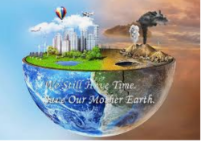

GLOBAL WARMING

GLOBAL WARMING IS THE INCREASE OF EARTH'S SURFACE TEMPERATURE DUE TO THE EFFECT OF GREENHOUSE GASES, SUCH AS CARBON DIOXIDE EMISSIONS FROM DEFORESTATION
, WHICH TRAP HEAT TAHT WOULD OTHERWISE ESCAPE FROM. THIS IS A TYPE OF GREENHOUSE EFFECT.
EARTH'S CLIMATE IS MOSTLY INFLUENCES BY THE FIRST 6 MILES OR SO OF THE ATMOSPHERE WHICH CONTAINS MOST OF THE MATTER MAKING UP TO THE ATMOSPHERE WHICH CONTAINS MOST OF THE MATTER MAKING UP THE ATMOSPHERE.
THIS IS REALLY A VERY THIN LAYER IF YOU THINK ABOUT IT. IN THE BOOK . THE END OF NATURE, AUTHOR TILL MC KIBBON TELLS OF WALKING THREE TO FORM HIS CABIN IN THE PRAGYA'S TO BUY FOOD.
AFTERWARDS, HE REALISED THAT ON THIS SHORT JOURNEY HE HAD TRAVELLED A DISTANCE EQUAL TO THAT OF THE LAYER OF THE ATMOSPHERE WHERE ALMOST ALL THE ACTION OF OUR CLIMATE IS CONTAINED.
IN FACT, IF YOU WERE TO VIEW EARTH FROM SPACE, THE PRINCIPAL PART OF THE ATMOSHERE WOULD ONLY BE ABOUT AS THICK AS THE SKIN ON AN ONION!
REALIZING THIS AMKES IT MORE PLAUSIBLE TO SUPPOSE THAT HUMAN BEING CAN CHANGE THE CLIMATE.